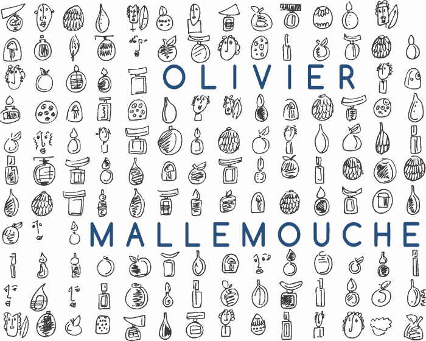
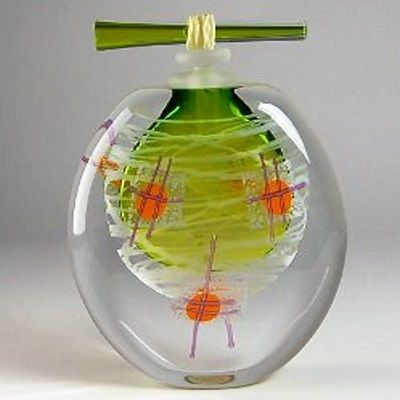

Bretenoux · Lot
OlivierMallemouche
Souffleur de verre
Des pièces uniques soufflées « à l'instinct » et « dans l'instant », où se glissent, entre les couches de verre, des visages, des calligraphies et la lumière de la feuille d'or.

Démarche
Olivier s'autorise à la créativité, à la figuration, tout en conservant une dimension traditionnelle.M. Fadat
Souffler devient un besoin
Sa vocation remonte à l'âge de huit ans. De son apprentissage, au début des années 80, à la création de son premier atelier, il perfectionne ses techniques et passe très vite des pièces utilitaires aux pièces uniques.
Il puise dans les Arts premiers, les arts calligraphiques et l'art moderne, et mène une quête plus graphique que formelle, malgré la figuration qu'il introduit peu à peu. Il reste assez classique dans sa façon d'aborder les supports, sauf pour leur format, parfois exceptionnellement grand.
Sans dessin préparatoire, il prévisualise ses pièces avant de jouer avec l'aléatoire : un corps-à-corps toujours plus direct avec la matière. Il crée aussi librement des « personnages », dans la veine ludique du verre contemporain.
Technique
La couleur prise dans le verre
Le traitement chromatique est son domaine d'excellence, et il y est autodidacte.
Soufflé à la canne
Chaque pièce est soufflée à la canne, sans dessin préparatoire.
Peinture intercalaire
Dessins, visages, calligraphies ou motifs abstraits sont pris entre les couches successives du verre, au fil de nombreuses cuissons.
Or, argent et couleurs
Sur fond de feuille d'or, d'argent et de masses colorées aux recettes secrètes.

Collections
Onze familles de pièces uniques
Des pièces uniques, du petit format à la pièce monumentale.
- Cocon
- Humanis
- Massai
- Tantines & Tantinettes
- Chrysalide
- Picto
- Signe
- Plume
- Imaginaterre
- Horizon
- Vénérables
Expositions et salons
Où l'on a vu ses pièces
Une sélection de salons et d'expositions.
- 2026Exposition-vente collective sur l'art du verre, galerie de l'Ancien Presbytère, Moustiers-Sainte-Marie
- 2020« Souffles de verre », Halle du verre, Claret
- 2017Biennale des verriers, Carmaux · Été verrier, Blangy-sur-Bresle
- 2016Salon « Pièce unique », château de Châteaugiron
- 2013–2014Salon Maison & Objet, Paris
L'atelier
Visiter l'atelier
L'atelier se trouve à Bretenoux, dans le Lot, sur la route du château de Castelnau.
Adresse
460 route du château de Castelnau
46130 Bretenoux
- Lundi au samedi
- 9 h – 12 h · 14 h – 18 h